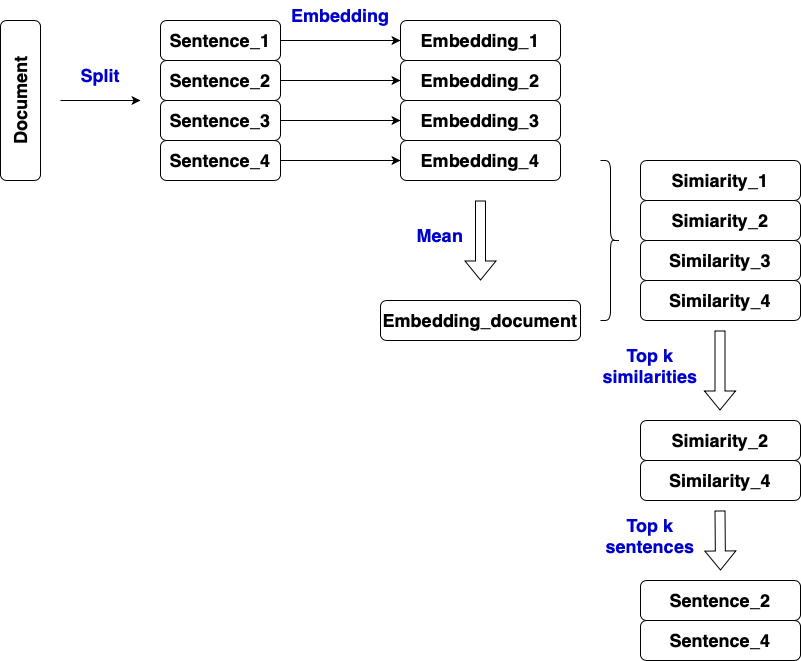

# document
document = """Banff National Park is Canada's oldest national park, established in 1885 as Rocky Mountains Park.
Located in Alberta's Rocky Mountains, 110–180 kilometres (68–112 mi) west of Calgary, Banff encompasses 6,641
square kilometres (2,564 sq mi)[3] of mountainous terrain, with many glaciers and ice fields, dense coniferous forest,
and alpine landscapes. Provincial forests and Yoho National Park are neighbours to the west, while Kootenay National Park
is located to the south and Kananaskis Country to the southeast. The main commercial centre of the park is the town of Banff,
in the Bow River valley.
The Canadian Pacific Railway was instrumental in Banff's early years, building the Banff Springs Hotel and Chateau Lake Louise,
and attracting tourists through extensive advertising. In the early 20th century, roads were built in Banff,
at times by war internees from World War I, and through Great Depression-era public works projects.
The Icefields Parkway extends from Lake Louise, connecting to Jasper National Park in the north."""
# load model
# pip install bert-extractive-summarizer
from summarizer import Summarizer
# load XLNet-based summarizer model
model = Summarizer(model='xlnet-base-cased')
# calculate embeddings
embeddings = model.run_embeddings(document, ratio = 1)
# calculate document embeddings
import numpy as np
document_embedding = np.mean(embeddings, axis=0)
# calculate similarites between each sentence embedding and document embedding
from sklearn.metrics.pairwise import cosine_similarity
similarities = [cosine_similarity([sentence_emb],[document_embedding])[0][0] for sentence_emb in embeddings]
similarities = np.array(similarities)
# select top k sentences by similarites
sentences = model.sentence_handler(document)
k = 3
temp = np.argsort(similarities)[::-1][:k]
for index in np.sort(temp):
print(sentences[index], end=" ")
# use pipeline
model(document, ratio=0.2)
model.run(document, ratio=0.2)
model(document, num_sentences = 3)
model.run(document, num_sentences = 3)